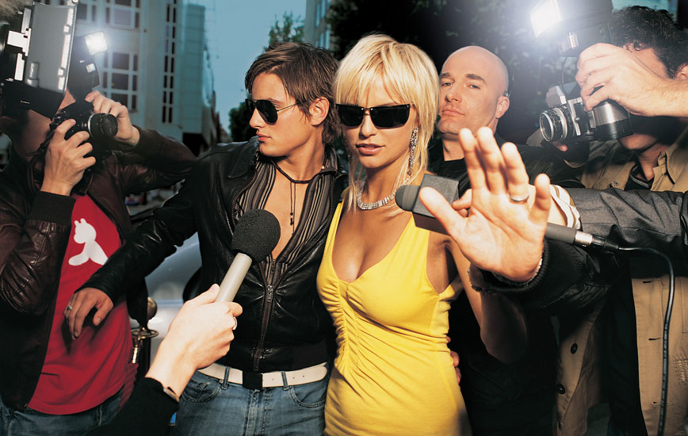
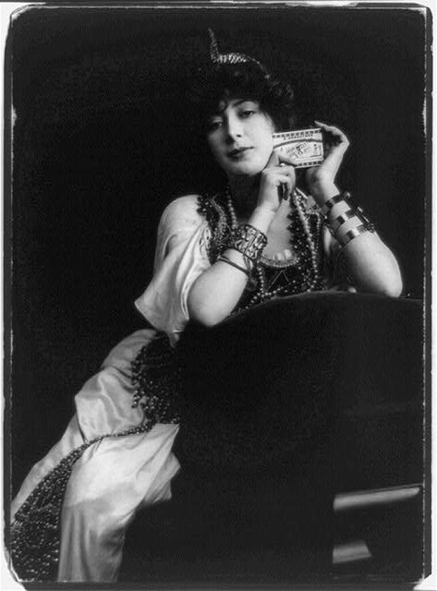

Figure 14.1
The U.S. Constitution’s First Amendment guarantees Americans freedom of the press, which many would agree is an important ingredient in upholding democratic principles. Freedom from government censorship allows the news media to keep citizens informed about the state of their society. But when does the press take this freedom from censorship and restriction too far? The death of Princess Diana in 1997 brought fierce criticism against the paparazzi, and tabloid reporting in general, when it was found that the princess’s car had been pursued by paparazzi vehicles before the crash that caused her death. In June 2011, Tori Spelling crashed after being chased by paparazzi. She was pregnant at the time and feared for her unborn child. In July 2011, paparazzi were detained for chasing Paris Jackson (Michael Jackson’s daughter). Despite these incidents, the public’s interest in celebrity gossip has not diminished; rather, the growth of online news sources has led to a proliferation of celebrity gossip websites.
A potential concern regarding this trend is that tabloid-style gossip is not confined to public figures in the entertainment industry; it can have far-reaching consequences. As noted in Chapter 2 "Media Effects", the firing of General Stanley McChrystal from his post as commander of all U.S. and NATO forces in Afghanistan in June 2010 was nearly the direct result of an article in Rolling Stone, in which he made less-than-flattering comments about Vice President Joe Biden.Michael Hastings, “The Runaway General,” Rolling Stone, June 25, 2010, http://www.rollingstone.com/politics/news/17390/119236. McChrystal himself did not directly criticize the president or the administration’s policies; instead, his views were inferred from comments made by his aides.MSNBC, “Obama, McCain, Kerry Comment on McChrystal,” June 22, 2010, http://www.msnbc.msn.com/id/37850711/ns/us_news-military/. However, this was sufficient to cost him his job. In recent years, tabloid reporting has become increasingly invasive and sometimes dangerous.
Should the government begin placing stronger regulations on tabloid reporting as privacy advocates have argued? The Constitution, after all, while guaranteeing freedom of the press, also has been interpreted as guaranteeing individuals certain rights to privacy, and most journalists would agree that standards of ethical journalism include efforts to protect these rights. However, some paparazzi photographers and celebrity journalists disregard journalistic codes of ethics in their efforts to get a story.Patrick J. Alach, “Paparazzi and Privacy,” Loyola of Los Angeles Entertainment Law Review 28, no. 3 (2008): 205. Many argue that because celebrities are “public figures,” the same privacy rights that protect the general public don’t apply. Us Weekly’s editor in chief, Janice Min, has argued, “A celebrity is like an elected official. If you’re getting paid $20 million a movie, you have to rely on public goodwill to stay in office. You have to accept the fact that you’re a public commodity.”Donna Freydkin, “Celebrities Fight for Privacy,” USA Today, July 6, 2004, http://www.usatoday.com/life/people/2004-07-06-celeb-privacy_x.htm. Harvey Levin, editor in chief for the popular celebrity gossip blog TMZ, would agree. When discussing invasions into the private lives of stars like Britney Spears, Levin proclaimed that “Britney is gold; she is crack to our readers. Her life is a complete train-wreck and I thank God for her every day.”New York Times, “TMZ Productions,” Times Topics, July 7, 2009, http://topics.nytimes.com/top/news/business/companies/tmz_productions/index.html?scp=1-spot&sq=tmz&st=cse.
On the other side of the debate, many argue that the public-figure limitation should be balanced with the consideration of a story’s newsworthiness. As law professor Patrick J. Alack has argued, “If ‘social value’ is what constitutes newsworthiness, it is hard to imagine a more perverse concept of social value that incorporates … Paris Hilton’s late-night dining preferences or Lindsay Lohan’s driving habits.”Patrick J. Alach, “Paparazzi and Privacy,” Loyola of Los Angeles Entertainment Law Review 28, no. 3 (2008): 237.
TMZ, a website that publishes celebrity news in real time, was launched in 2005, and since its creation the site has received numerous criticisms from more prestigious news sources like The Washington Post and ABC News. Yet Thane Burnett, reporter for The Toronto Sun, admits that “despite the sideways glances, mainstream news services prowl TMZ’s site for coverage.”Thane Burnett, “Caught on Camera,” Toronto Sun, May 12, 2009, http://www.torontosun.com/entertainment/celebrities/2009/05/12/9429036-sun.html. With the immediacy of Internet news coverage, mainstream media outlets face increasing pressure to release major news while it is still fresh. That pressure is compounded by celebrity gossip sites like TMZ that may resort to unorthodox methods to gather information; the shelf life of breaking news is growing increasingly shorter.
In the competitive and rapidly changing world of mass-media communications, media professionals—overcome by deadlines, bottom-line imperatives, and corporate interests—can easily lose sight of the ethical implications of their work. However, as entertainment law specialist Sherri Burr points out, “Because network television is an audiovisual medium that is piped free into ninety-nine percent of American homes, it is one of the most important vehicles for depicting cultural images to our population.”Sherri Burr, “Television and Societal Effects: An Analysis of Media Images of African-Americans in Historical Context,” Journal of Gender, Race and Justice 4 (2001): 159. Considering the profound influence mass media like television have on cultural perceptions and attitudes, it is important for the creators of media content to grapple with ethical issues.
The U.S. population is becoming increasingly diverse. According to U.S. Census statistics from 2010, 27.6 percent of the population identifies its race as non-white.U.S. Census Bureau, “2010 Census Data,” http://2010.census.gov/2010census/data/. Yet in network television broadcasts, major publications, and other forms of mass media and entertainment, minorities are often either absent or presented as heavily stereotyped, two-dimensional characters. Rarely are minorities depicted as complex characters with the full range of human emotions, motivations, and behaviors. Meanwhile, the stereotyping of women, gays and lesbians, and individuals with disabilities in mass media has also been a source of concern.
The word stereotype originated in the printing industry as a method of making identical copies, and the practice of stereotyping people is much the same: a system of identically replicating an image of an “other.” As related in Chapter 8 "Movies" about D. W. Griffith’s The Birth of a Nation, a film that relied on racial stereotypes to portray Southern whites as victims in the American Civil War, stereotypes—especially those disseminated through mass media—become a form of social control, shaping collective perceptions and individual identities. In American mass media, the white man is still shown as the standard: the central figure of television narratives and the dominant perspective on everything from trends, to current events, to politics. White maleness becomes an invisible category because it gives the impression of being the norm.Joanna Hearne, “Hollywood Whiteness and Stereotypes,” Film Reference, http://www.filmreference.com/encyclopedia/Independent-Film-Road-Movies/Race-and-Ethnicity-HOLLYWOOD-WHITENESS-AND-STEREOTYPES.html.
In the fall of 1999, when the major television networks released their schedules for the upcoming programming season, a startling trend became clear. Of the 26 newly released television programs, none depicted an African American in a leading role, and even the secondary roles on these shows included almost no racial minorities. In response to this ommission, the National Association for the Advancement of Colored People (NAACP) and the National Council of La Raza (NCLR), an advocacy group for Hispanic Americans, organized protests and boycotts. Pressured—and embarrassed—into action, the executives from the major networks made a fast dash to add racial minorities to their prime-time shows, not only among actors, but also among producers, writers, and directors. Four of the networks—ABC, CBS, NBC, and Fox—added a vice president of diversity position to help oversee the networks’ progress toward creating more diverse programming.Leonard M. Baynes, “White Out: The Absence and Stereotyping of People of Color by the Broadcast Networks in Prime Time Entertainment Programming,” Arizona Law Review 45 (2003): 293.
Despite these changes and greater public attention regarding diversity issues, minority underrepresentation is still an issue in all areas of mass media. In fact, the trend in recent years has been regressive. In a recent study, the NAACP reported that the number of minority actors on network television has actually decreased, from 333 during the 2002–2003 season to 307 four years later.WWAY, “NAACP Not Pleased With the Diversity on Television,” January 12, 2009, http://www.wwaytv3.com/naacp_not_pleased_diversity_television/01/2009. Racial minorities are often absent, peripheral, or take on stereotyped roles in film, television, print media, advertising, and even in video games. Additionally, according to a 2002 study by the University of California, Los Angeles, the problem is not only a visible one, but also one that extends behind the scenes. The study found that minorities are even more underrepresented in creative and decision-making positions than they are on screen.Media Awareness Network, “Ethnic and Visible Minorities in Entertainment Media,” 2010, http://www.media-awareness.ca/english/issues/stereotyping/ethnics_and_minorities/minorities_entertainment.cfm. This lack of representation among producers, writers, and directors often directly affects the way minorities are portrayed in film and television, leading to racial stereotypes.
Though advocacy groups like the NCLR and the NAACP have often been at the forefront of protests against minority stereotypes in the media, experts are quick to point out that the issue is one everyone should be concerned about. As media ethicist Leonard M. Baynes argues, “Since we live in a relatively segregated country…broadcast television and its images and representations are very important because television can be the common meeting ground for all Americans.”Leonard M. Baynes, “White Out: The Absence and Stereotyping of People of Color by the Broadcast Networks in Prime Time Entertainment Programming,” Arizona Law Review 45 (2003): 293. There are clear correlations between mass media portrayals of minority groups and public perceptions. In 1999, after hundreds of complaints by African Americans that they were unable to get taxis to pick them up, the city of New York launched a crackdown, threatening to revoke the licenses of cab drivers who refused to stop for African American customers. When interviewed by reporters, many cab drivers blamed their actions on fears they would be robbed or asked to drive to dangerous neighborhoods.Sherri Burr, “Television and Societal Effects: An Analysis of Media Images of African-Americans in Historical Context,” Journal of Gender, Race and Justice 4 (2001): 159.
Racial stereotypes are not only an issue in entertainment media; they also find their way into news reporting, which is a form of storytelling. Journalists, editors, and reporters are still predominately white. According to a 2000 survey, only 11.6 percent of newsroom staff in the United States were racial and ethnic minorities.Media Awareness Network, “Ethnic and Visible Minorities in the News,” 2010, http://www.media-awareness.ca/english/issues/stereotyping/ethnics_and_minorities/minorities_news.cfm. The situation has not improved dramatically during the past decade. According to a 2008 newsroom census released by the American Society of Newspaper Editors, the percentage of minority journalists working at daily newspapers was a scant 13.52 percent.National Association of Hispanic Journalists, “NAHJ Disturbed by Figures That Mask Decline in Newsroom Diversity,” news release, 2010, http://www.nahj.org/nahjnews/articles/2008/April/ASNE.shtml. Because of this underrepresentation behind the scenes, the news media is led by those whose perspective is already privileged, who create the narratives about those without privilege. In the news media, racial minorities are often cast in the role of villains or troublemakers, which in turn shapes public perceptions about these groups. Media critics Robert Entman and Andrew Rojecki point out that images of African Americans on welfare, African American violence, and urban crime in African American communities “facilitate the construction of menacing imagery.”Clifford G. Christians, “Communication Ethics,” in Encyclopedia of Science, Technology, and Ethics, ed. Carl Mitchum (Detroit: Macmillan Reference USA, 2005), 1:366. Similarly, a study by the National Association of Hispanic Journalists found that only 1 percent of the evening news stories aired by the three major U.S. television networks cover Latinos or Latino issues, and that when Latinos are featured, they are portrayed negatively 80 percent of the time.Media Awareness Network, “Ethnic and Visible Minorities in the News.” Still others have criticized journalists and reporters for a tendency toward reductive presentations of complex issues involving minorities, such as the religious and racial tensions fueled by the September 11 attacks. By reducing these conflicts to “opposing framesExplaining an issue as a two-sided struggle for the sake of fast and easy audience comprehension.”—that is, by oversimplifying them as two-sided struggles so that they can be quickly and easily understood—the news media helped create a greater sense of separation between Islamic Americans and the dominant culture after September 11, 2001.Ginny Whitehouse, “Why Diversity Is an Ethical Issue,” The Handbook of Mass Media Ethics, ed. Lee Wilkins and Clifford G. Christians (New York: Routledge, 2009), 101.
Since the late 1970s, the major professional journalism organizations in the United States—Associated Press Managing Editors (APME), Newspaper Association of America (NAA), American Society of Newspaper Editors (ASNE), Society for Professional Journalists (SPJ), Radio and Television News Directors Association (RTNDA), and others—have included greater ethnic diversity as a primary goal or ethic. However, progress has been slow. ASNE has set 2025 as a target date to have minority representation in newsrooms match U.S. demographics.Ginny Whitehouse, “Why Diversity Is an Ethical Issue,” The Handbook of Mass Media Ethics, ed. Lee Wilkins and Clifford G. Christians (New York: Routledge, 2009), 102.
Because the programming about, by, and for ethnic minorities in the mainstream media is disproportionately low, many turn to niche publications and channels such as BET, Univision, Telemundo, Essence, Jet, and others for sources of information and entertainment. In fact, 45 percent of ethnic-minority adults prefer these niche media sources to mainstream television, radio programs, and newspapers.Ginny Whitehouse, “Why Diversity Is an Ethical Issue,” The Handbook of Mass Media Ethics, ed. Lee Wilkins and Clifford G. Christians (New York: Routledge, 2009), 103. These sources cover stories about racial minorities that are generally ignored by the mainstream press and offer ethnic-minority perspectives on more widely covered issues in the news.Pew Project for Excellence in Journalism, “Ethnic,” in The State of the News Media 2010, http://www.stateofthemedia.org/2010/ethnic_summary_essay.php. Entertainment channels like BET (a 24-hour cable television station that offers music videos, dramas featuring predominately black casts, and other original programming created by African Americans) provide the diverse programming that mainstream television networks often drop.Rachel Zellars, “Black Entertainment Television (BET),” in Encyclopedia of African-American Culture and History, 2nd ed., ed. Colin A. Palmer (Detroit: Macmillan Reference USA, 2006.) 1:259. Print sources like Vista, a bilingual magazine targeting U.S. Hispanics, and Vivid, the most widely circulated African American periodical, appeal to ethnic minority groups because they are controlled and created by individuals within these groups. Though some criticize ethnic niche media, claiming that they erode common ground or, in some instances, perpetuate stereotypes, the popularity of these media has only grown in recent years and will likely continue in the absence of more diverse perspectives in mainstream media sources.Can Tran, “TV Network Reviews: Black Entertainment Television (BET),” Helium, http://www.helium.com/items/884989-tv-network-reviews-black-entertainment-television-bet; Joe Flint, “No Black-and-White Answer for the Lack of Diversity on Television,” Company Town (blog), Los Angeles Times, June 11, 2010, http://latimesblogs.latimes.com/entertainmentnewsbuzz/2010/06/diversity-television.html.
In the ABC sitcom The Donna Reed Show (1958–1966), actress Donna Reed plays a stay-at-home mother who fills her days with housework, cooking for her husband and children, decorating, and participating in community organizations, all while wearing pearls, heels, and stylish dresses. Such a traditional portrayal of femininity no doubt sounds dated to modern audiences, but stereotyped gender roles continue to thrive in the mass media. Women are still often represented as subordinate to their male counterparts—emotional, noncompetitive, domestic, and sweet natured. In contrast to these types, other women are represented as unattractively masculine, crazy, or cruel. In television dramas and sitcoms, women continue to fill traditional roles such as mothers, nurses, secretaries, and housewives. By contrast, men in film and television are less likely to be shown in the home, and male characters are generally characterized by dominance, aggression, action, physical strength, and ambition.Daniel Chandler, “Television and Gender Roles” http://www.aber.ac.uk/media/Modules/TF33120/gendertv.html#E. In the mainstream news media, men are predominately featured as authorities on specialized issues like business, politics, and economics, while women are more likely to report on stories about natural disasters or domestic violence—coverage that does not require expertise.Media Awareness Network, “Media Coverage of Women and Women’s Issues,” http://www.media-awareness.ca/english/issues/stereotyping/women_and_girls/women_working.cfm. In sports programming, men are the authoritative figures in the broadcast booth while women are “sideline reporters.“
Not only is the white male perspective still presented as the standard, authoritative one, but also the media itself often comes to embody the male gaze. Media commentator Nancy Hass notes that “shows that don’t focus on men have to feature the sort of women that guys might watch.”Media Awareness Network, “The Economics of Gender Stereotyping,” http://www.media-awareness.ca/english/issues/stereotyping/women_and_girls/women_economics.cfm. Feminist critics have long been concerned by the way women in film, television, and print media are defined by their sexuality. Few female role models exist in the media who are valued primarily for qualities like intelligence or leadership. Inundated by images that conform to unrealistic beauty standards, women come to believe at an early age that their value depends on their physical attractiveness. According to one Newsweek article, eating disorders in girls are now routinely being diagnosed at younger ages, sometimes as early as 8 or 9. The models who appear in magazines and print advertising are unrealistically skinny (23 percent thinner than the average woman), and their photographs are further enhanced to hide flaws and blemishes. Meanwhile, the majority of women appearing on television are under the age of 30, and many older actresses, facing the pressure to embody the youthful ideal, undergo surgical enhancements to appear younger.Jennifer L. Derenne and Eugene V. Beresin, “Body Image, Media, and Eating Disorders,” Academic Psychiatry 30 (2006), http://ap.psychiatryonline.org/cgi/content/full/30/3/257. One recent example is television news host Greta Van Susteren, a respected legal analyst who moved from CNN to Fox in 2002. At the debut of her show, On the Record, Van Susteren, sitting behind a table that allowed viewers to see her short skirt, had undergone not only a hair and wardrobe makeover, but also surgical enhancement to make her appear younger and more attractive.Media Awareness Network, “Media Coverage of Women and Women’s Issues,” http://www.media-awareness.ca/english/issues/stereotyping/women_and_girls/women_working.cfm. However, these enhancements are not restricted to the “over 30” crowd. Indeed, younger stars, such as Ashley Tisdale (High School Musical), singer Ashlee Simpson, and reality star Heidi Montag, have all availed themselves of plastic surgery.
In addition to the prevalence of gender stereotypes, the ratio of men to women in the mass media, in and behind the scenes, is also disproportionate. Surprisingly, though women slightly outnumber men in the general population, over two-thirds of television sitcoms feature men in the starring role.Media Awareness Network, “The Economics of Gender Stereotyping,” http://www.media-awareness.ca/english/issues/stereotyping/women_and_girls/women_economics.cfm. Among writers, producers, directors, and editors, the number of women lags far behind. In Hollywood, for instance, only 17 percent of behind-the-scenes creative talent is represented by women. Communications researcher Martha Lauzen argues that “when women have more powerful roles in the making of a movie or television show, we know that we also get more powerful female characters on-screen, women who are more real and more multi-dimensional.”Media Awareness Network, “Women Working in the Media,” http://www.media-awareness.ca/english/issues/stereotyping/women_and_girls/women_working.cfm.
Creators of all forms of media know that sex—named, innuendoed, or overtly displayed—is a surefire way to grab an audience’s attention. “Sex sells” is an advertising cliché; the list of products that advertisers have linked to erotic imagery or innuendo, from cosmetics and cars to vacation packages and beer, is nearly inexhaustible. Most often, sexualized advertising content is served up in the form of the female body, in part or in whole, featured in provocative or suggestive poses beside a product that may have nothing to do with sexuality. However, by linking these two things, advertisers are marketing desire itself.
Figure 14.2

Sex Sells: Commodifying Desire, Past and Present
Sex is used to sell not just consumer goods; it sells media, too. Music videos on MTV and VH1, which promote artists and their music, capture audience attention with highly suggestive dance moves, often performed by scantily clad women. Recent music videos by Jennifer Lopez, Rihanna, Beyoncé, and Lady Gaga are just a few examples. Movie trailers may flash brief images of nudity or passionate kissing to suggest more to come in the movie. Video games feature female characters like Lara Croft of Tomb Raider, whose tightly fitted clothes reveal all the curves of her Barbie-doll figure. And partially nude models grace the cover of men’s and women’s magazines like Maxim, Cosmopolitan, and Vogue where cover lines promise titillating tips, gossip, and advice on bedroom behavior.Tom Reichert and Jacqueline Lambiase, “Peddling Desire: Sex and the Marketing of Media and Consumer Goods,” Sex in Consumer Culture: The Erotic Content of Media and Marketing, ed. Tom Reichert and Jacqueline Lambiase (New York: Routledge, 2005), 3.
In the 1920s and 1930s, filmmakers attracted audiences to the silver screen with the promise of what was then considered scandalous content. Prior to the 1934 Hays Code, which placed restrictions on “indecent” content in movies, films featured erotic dances, male and female nudity, references to homosexuality, and sexual violence (for more information on the Hays Code, see Chapter 8 "Movies" and Chapter 15 "Media and Government"). D. W. Griffith’s Intolerance (1916) includes scenes with topless actresses, as does Ben Hur (1925). In Warner Bros.’ Female (1933), the leading lady, the head of a major car company, spends her evenings in sexual exploits with her male employees, a story line that would never have passed the Hays Code a year later.Gary Morris, “Public Enemy: Warner Brothers in the Pre-Code Era,” Bright Lights Film Journal, September 1996, http://www.brightlightsfilm.com/17/04b_warner.php. Trouble in Paradise, a 1932 romantic comedy, was withdrawn from circulation after the institution of the Hays Code because of its frank discussion of sexuality. Similarly, Dr. Jekyll and Mr. Hyde (1931), which featured a prostitute as one of the main characters, was also banned under the code.Daniel P. Hauesser, “Indecent and Deviant: Pre-Hays Code Films You Should See,” indieWIRE, 2007, http://www.spout.com/groups/Top_5/Re_5_Pre_Hays_Code_Films/190/19210/1/ShowPost.aspx.
In the 1960s, when the sexual revolution led to increasingly permissive attitudes toward sexuality in American culture, the Hays Code was replaced with the MPAA rating system, with ratings such as G, PG, and R. The rating system, designed to warn parents about potentially objectionable material in films, allowed filmmakers to include sexually explicit content without fear of public protest. Since the replacement of the Hays Code, sexual content has been featured in movies with much greater frequency.
The problem, according to many media critics, is not that sex now appears more often, but that it is almost always portrayed unrealistically in American mass media.Mary Lou Galician, Sex, Love & Romance in the Mass Media (New York: Routledge, 2004), 5; Media Awareness Network, “Sex and Relationships in the Media,” Media Awareness Network, http://www.media-awareness.ca/english/issues/stereotyping/women_and_girls/women_sex.cfm. This can be harmful, they say, because the mass media are important socialization agentsA way people learn about the norms, expectations, and values of their society.; that is, ways that people learn about the norms, expectations, and values of their society.Mary Lou Galician, Sex, Love & Romance in the Mass Media (New York: Routledge, 2004), 82. Sex, as many films, television shows, music videos, and song lyrics present it, is frequent and casual. Rarely do these media point out the potential emotional and physical consequences of sexual behavior. According to one study, portrayals of sex that include possible risks like sexually transmitted diseases or pregnancy only occur in 15 percent of the sexually explicit material on television.Parents Television Council, “Facts and TV Statistics,” http://www.parentstv.org/ptc/facts/mediafacts.asp. Additionally, actors and models depicted in sexual relationships in the media are thinner, younger, and more attractive than the average adult. This creates unrealistic expectations about the necessary ingredients for a satisfying sexual relationship.
Social psychologists are particularly concerned with the negative effects these unrealistic portrayals have on women, as women’s bodies are the primary means of introducing sexual content into media targeted at both men and women. Media activist Jean Kilbourne points out that “women’s bodies are often dismembered into legs, breasts or thighs, reinforcing the message that women are objects rather than whole human beings.”Media Awareness Network, “Sex and Relationships in the Media,” Media Awareness Network, http://www.media-awareness.ca/english/issues/stereotyping/women_and_girls/women_sex.cfm. Adbusters, a magazine that critiques mass media, particularly advertising, points out the sexual objectification of women’s bodies in a number of its spoof advertisements, such as the one in Figure 14.3, bringing home the message that advertising often sends unrealistic and harmful messages about women’s bodies and sexuality. Additionally, many researchers note that in women’s magazines, advertising, and music videos, women are often implicitly—and sometimes explicitly—given the message that a primary concern should be attracting and sexually satisfying men.Media Awareness Network, “Sex and Relationships in the Media,” Media Awareness Network, http://www.media-awareness.ca/english/issues/stereotyping/women_and_girls/women_sex.cfm. Furthermore, the recent increase in entertainment featuring sexual violence may, according to some studies, negatively affect the way young men behave toward women.Barrie Gunter, Media Sex: What Are the Issues? (Mahwah, NJ: Lawrence Erlbaum Associates, 2002), 8.
Figure 14.3

Sexual objectification: Women’s bodies are often headless or dismembered into legs, breasts, or thighs in media portrayals.Adbusters, “Spoof Ads,” https://www.adbusters.org/gallery/spoofads.
Young women and men are especially vulnerable to the effects of media portrayals of sexuality. Psychologists have long noted that teens and children get much of their information and many of their opinions about sex through television, film, and online media. In fact, two-thirds of adolescents turn to the media first when they want to learn about sexuality.Media Awareness Network, “Sex and Relationships in the Media,” Media Awareness Network, http://www.media-awareness.ca/english/issues/stereotyping/women_and_girls/women_sex.cfm. The media may help shape teenage and adolescent attitudes toward sex, but they can also lead young people to engage in sexual activity before they are prepared to handle the consequences. According to one study, kids with high exposure to sex on television were almost twice as likely to initiate sexual activity compared to kids without exposure.Rebecca L. Collins and others, “Watching Sex on Television Predicts Adolescent Initiation of Sexual Behavior,” Pediatrics 114, no. 3 (2004), http://pediatrics.aappublications.org/cgi/content/full/114/3/e280.
Cultural critics have noted that sexually explicit themes in mass media are generally more widely accepted in European nations than they are in the United States. However, the increased concern and debates over censorship of sexual content in the United States may in fact be linked to the way sex is portrayed in American media rather than to the presence of the sexual content in and of itself. Unrealistic portrayals that fail to take into account the actual complexity of sexual relationships seem to be a primary concern. As Jean Kilbourne has argued, sex in the American media “has far more to do with trivializing sex than with promoting it. We are offered a pseudo-sexuality that makes it far more difficult to discover our own unique and authentic sexuality.”Media Awareness Network, “Sex and Relationships in the Media,” Media Awareness Network, http://www.media-awareness.ca/english/issues/stereotyping/women_and_girls/women_sex.cfm. However, despite these criticisms, it is likely that unrealistic portrayals of sexual content will continue to be the norm in mass media unless the general public stops consuming these images.
Choose a television show or movie you are familiar with and consider the characters in terms of racial and gender diversity. Then answer the following short-answer questions. Each response should be one to two paragraphs.
Now more than ever, with the presence of online news sources, news delivery is expected to be instantaneous, and journalists and news agencies face pressure to release stories rapidly to keep up with competing media sources. With this added pressure, standards of accuracy and fairness become more difficult to uphold. What wins when ethical responsibility and bottom-line concerns are at odds? Columnist Ellen Goodman notes that there has always been a tension in journalism between being first and being right. She argues, “In today’s amphetamine world of news junkies, speed trumps thoughtfulness too often.”Ellen Goodman, “Temper ‘Instant’ News Coverage,” Gainesville (FL) Sun, February 7, 1993, http://news.google.com/newspapers?nid=1320&dat=19930207&id=vt4RAAAAIBAJ&sjid=XuoDAAAAIBAJ&pg=5028,1856837. As you read the following sections, decide if you agree with Goodman’s assessment of the state of the news media today.
In 1916, audiences across America tuned in to their radios to hear the first-ever breaking-news coverage of an event as the results of the presidential election between Woodrow Wilson and Charles Evans Hughes were announced from the offices of The New York American. Until that broadcast, news was delivered to American homes once per day in the form of a newspaper, and often this coverage lagged a day or more behind the actual incidents it reported. Whereas much of radio news coverage even into the 1930s involved the reading of newspaper stories and news wires on the air, radio offered something that the newspapers could not: live coverage of special events.Gordon Govier, “The Living Room Fixture,” The Evolution of Radio News, 2007, http://www.radioscribe.com/formats.html.
For decades, the public turned to the family radio when they wanted to hear the most recent coverage of important news. All of that changed, however, in 1963 with the assassination of President John F. Kennedy. CBS correspondent Dan Rather took television audiences live to “the corner window just below the top floor, where the assassin stuck out his 30 caliber rifle,” and for the first time, people were able to see an event nearly as it occurred. This was the beginning of round-the-clock television news coverage, and the American public, while still relying on print news for detailed coverage, came to expect greater immediacy of major event reporting through television and radio broadcasts.Jaime Holguin, “Rather Recalls JFK Assassination,” CBS News, February 28, 2005, http://www.cbsnews.com/stories/2005/02/28/eveningnews/main677096.shtml.
Today, with the widespread availability of Internet news, instant coverage is the norm rather than the exception, and the Internet and cell phones have generally replaced television and radio as the source of immediate information. Visitors to ABCNews.com can watch an evening newscast three and a half hours before it airs on television.Patricia Sullivan, “As the Internet Grows Up, the News Industry Is Forever Changed,” Washington Post, June 19, 2006, http://www.washingtonpost.com/wp-dyn/content/article/2006/06/13/AR2006061300929.html. RSS (which stands for really simple syndication, a standard for the easy syndication of online content) feeds, home pages for major news-delivery sites like Yahoo! News and CNN.com, news tickers, live video streams, blogs, Facebook, Twitter, and a host of other media outlets ensure that news—and rumors of news—circulates within minutes of its occurrence. Additionally, with smartphone applications like those for The New York Times and USA Today, people can access the latest news coverage from almost anywhere.
The development of the Internet as a source of free and immediate access to information has forever changed the structure of the news media. Newspaper, television, and radio news programs have all had to adapt and diversify to compete for a share of the market. As Jeffrey Cole, director of the Center for Digital Communication put it, “For the first time in 60 years, newspapers are back in the breaking news business.” Online, newspapers can compete with broadcast media for immediate coverage, posting articles on their home pages as soon as the stories are written, and supplementing the articles on their websites with audiovisual content. Gone is the era of single-medium newsrooms with predictable deadlines.USC Annenberg School for Communication and Journalism, “Annual Internet Survey by Center for the Digital Future Finds Large Increases in Use of Online Newspapers,” news release, Center for Digital Future, April 2009, http://annenberg.usc.edu/News%20and%20Events/News/090429CDF.aspx.
Not only are traditional news media restructuring, but news consumers are also changing the way they access information. Increasingly, audiences want news on demand; they want to get news when they want it, and they want to be able to gather it from a variety of sources. This is having a significant effect on media revenues. News aggregatorsA website that compiles news headlines from a number of sources for display on its pages. Examples include Newsmap, Google News, and Yahoo! News., websites like Yahoo! News and Google News that compile news headlines from an array of legacy news organizations to display on their pages, have become popular information outlets. Although these websites don’t hire reporters to produce news stories themselves, they get about the same amount of online traffic as websites for legacy news organizationsNews organizations that were around before online news caused a shift in the industry. These organizations have not been replaced, but they have had to diversify. like CNN and The Wall Street Journal. Moreover, many subscribers to print newspapers and magazines are canceling their subscriptions because they can get more current information online at no cost.Pew Project for Excellence in Journalism, The State of the News Media 2010, http://www.stateofthemedia.org/2010/overview_intro.php. Print advertising is down as well. In 2004, The San Francisco Chronicle reported losing $50 million in classified advertising to free online options like Craigslist.Patricia Sullivan, “As the Internet Grows Up, the News Industry Is Forever Changed,” Washington Post, June 19, 2006, http://www.washingtonpost.com/wp-dyn/content/article/2006/06/13/AR2006061300929.html.
This loss of revenue has become a problem in recent years because while newspapers and magazines generate some income from advertisements on their websites, the money is not enough to compensate for lost readership and print ads. Subscriptions and advertising in traditional print media still account for 90 percent of industry funds, which means with less revenue in these areas, the support base for news organizations is dwindling. Newspapers and magazines across the country have had to restructure and scale down. Newspapers now spend $1.6 billion less annually on reporting and editing than they did 10 years ago.Pew Project for Excellence in Journalism, The State of the News Media 2010.
Additionally, reduced budgets combined with greater pressure for immediacy have changed the way information gets reported and disseminated. Newsrooms are asking their staffs to focus on producing first accounts more quickly to feed multiple platforms. This often means that more resources go into distributing information than gathering it. Once news is released online by one source, it spreads rapidly, and other organizations scramble to release accounts, too, in order to keep up, often leaving staff less time for fact-checking and editing. The initial story is then followed quickly by commentary from both professional news organizations and nonprofessional sources on blogs, Twitter, and other social networks.
As a result of this restructuring, certain stories may get distributed, replayed, and commented on almost excessively, while other stories go unnoticed and in-depth coverage that would unearth more facts and context gets neglected. This has led a number of industry professionals to become anxious over the future of the news industry. The Center for Excellence in Journalism has called the news industry today “more reactive than proactive.”Pew Project for Excellence in Journalism, The State of the News Media 2010. Journalist Patricia Sullivan complains, “Right now, almost no online news sites invest in original, in-depth and scrupulously edited news reporting.”Patricia Sullivan, “As the Internet Grows Up, the News Industry Is Forever Changed,” Washington Post, June 19, 2006, http://www.washingtonpost.com/wp-dyn/content/article/2006/06/13/AR2006061300929.html. While some may disagree with Sullivan, in-depth journalism remains an expensive and time-consuming venture that many online news sites, faced with uncertain revenue streams and a growing consumer demand for real-time news updates, are reluctant to bankroll extensively.
Already strapped for funds, news organizations know they have to cater to public demands, and foremost among these demands is speed. When pop-music icon Michael Jackson died on June 26, 2009, at 2:26 p.m., news of his death hit cyberspace by 2:44 p.m. and soon spread nationwide via Twitter. Perhaps surprisingly, the initial report of Jackson’s death was released by celebrity gossip website TMZ. Legacy news sources were slower to publish accounts. The Los Angeles Times, wary of the sourcing of the story, waited to confirm the news and didn’t publish the story on its website until 3:15 p.m., by which time, thanks to the speed of social media, the star’s death was already “old news.”Scott Collins and Greg Braxton, “TV Misses Out as Gossip Website TMZ Reports Michael Jackson’s Death First,” Los Angeles Times, June 26, 2009, http://articles.latimes.com/2009/jun/26/local/me-jackson-media26.
Figure 14.4


American news organizations are losing their audiences to online media and have lost billions in advertising income.
In the preamble to its statement of purpose, the Committee of Concerned Journalists lists as the central purpose of journalism “to provide citizens with accurate and reliable information they need to function in a free society.”Committee of Concerned Journalists, “Statement of Shared Purpose,” Pew Project for Excellence in Journalism, http://www.journalism.org/resources/principles. This theory of the social responsibility of the press is often referred to as the vital information premiseThe widely accepted foundation for principles of journalism ethics, according to which the news media have a responsibility to society as a whole to provide the information it needs to function as a democracy.. Though sometimes worded differently by different organizations, it is widely accepted in the journalism community as the foundation for any principles of media ethics.Jeremy Iggers, Good News, Bad News: Journalism Ethics and the Public Interest (Boulder, CO: Westview Press, 1999), 46. What are those specific principles? Here are some that are particularly important for journalists in the current media climate.
If the basis for the principles of ethical news reporting is giving citizens the information they need to function in a democratic society, then that information must be presented accurately. Journalists should be careful to verify the facts before they report them. As the Committee of Concerned Journalists asserts, “Accuracy is the foundation upon which everything else is built—context, interpretation, comment, criticism, analysis and debate,” so reliable news sources are essential if citizens are to have a clear understanding of the society in which they live.Committee of Concerned Journalists, “Statement of Shared Purpose,” Pew Project for Excellence in Journalism, http://www.journalism.org/resources/principles. Furthermore, although news organizations have a professional responsibility toward advertisers and shareholders, their commitment is always to citizens first. This means that journalists must report the facts truthfully and without omission, even if they are not in the best interest of advertisers, shareholders, or friends.
Reporting issues fairly requires not only factual accuracy, but also lack of favoritism toward any organization, political group, ideology, or other agenda. The Society of Professional Journalists stipulates that journalists should refuse gifts and favors and avoid political involvement or public office if these things compromise journalistic integrity.Society of Professional Journalists, “SPJ Code of Ethics,” http://www.spj.org/ethicscode.asp. Additionally, journalists should avoid inflating stories for sensation and be as transparent as possible about their sources of information so that the public can investigate the issues further on their own.Committee of Concerned Journalists, “Statement of Shared Purpose,” Pew Project for Excellence in Journalism, http://www.journalism.org/resources/principles.
All sides of an issue should be presented in a news story. Of course, all journalists have a perspective from which they write, but a clear distinction should be made between news reports and editorial content.American Society of News Editors, “ASNE’s Statement of Principles,” August 2009, http://asne.org/article_view/articleid/325/asnes-statement-of-principles.aspx.
Many issues in the news are layered and highly complex. Developing a thorough understanding of issues requires dedication and a sometimes lengthy investigation, and, especially in a world where rapid reporting is the norm, there can be a temptation to gloss over the finer points of an issue for the sake of efficiency. Additionally, most consumers of news, increasingly busy and overwhelmed by the amount of information available, want stories that can be quickly digested and easily comprehended. However, as the Committee of Concerned Journalists points out, the media must balance what readers want with what they need but cannot anticipate.Committee of Concerned Journalists, “Statement of Shared Purpose,” Pew Project for Excellence in Journalism, http://www.journalism.org/resources/principles. Oversimplifying issues, whether for the sake of a quick story or to satisfy public tastes, becomes a violation of the vital information premise.Society of Professional Journalists, “SPJ Code of Ethics,” http://www.spj.org/ethicscode.asp.
When discussing what he considers to be one of the key issues in professional journalism, media ethicist Jeremy Iggers points out that because democracy means the widest possible participation of citizens in public life, diversity in journalism is of fundamental importance.Jeremy Iggers, Good News, Bad News: Journalism Ethics and the Public Interest (Boulder, CO: Westview Press, 1999), 138. Not only should newsroom staff represent a diversity of gender and races, but journalists should also speak for all groups in society—“not just those with attractive demographics,” as the Committee for Concerned Journalists puts it. Journalists should represent the underrepresented because ignoring citizens is a form of disenfranchisement.Committee of Concerned Journalists, “Statement of Shared Purpose,” Pew Project for Excellence in Journalism, http://www.journalism.org/resources/principles.
When the framers of the U.S. Constitution guaranteed freedom of the press, one of the things they had in mind was the ability of the news media to serve as a watchdog over those in positions of power.Committee of Concerned Journalists, “Statement of Shared Purpose,” Pew Project for Excellence in Journalism, http://www.journalism.org/resources/principles. It is the duty of the press to ensure that business is conducted in the open and that government actions are public. One famous example of the media fulfilling its watchdog role was The Washington Post’s investigation of the 1972 Watergate scandal. During Richard Nixon’s presidency, journalists at the Post uncovered information linking government agencies and officials to the break-in at the Democratic National Committee headquarters at the Watergate complex as part of an attempt to sabotage the Democratic campaign and guarantee Nixon’s reelection.Richard M. Flanagan and Louis W. Koenig, “Watergate,” in Dictionary of American History, ed. Stanley I. Kutler, 3rd ed. (New York: Charles Scribner’s Sons, 2003), 8:425. Media coverage of the scandal increased publicity and ultimately put pressure on the government that led to an investigation and the prosecution of many who were involved.“The Government and Watergate,” in American Decades, ed. Judith S. Baughman and others (Detroit: Gale, 2001), vol. 8. In the past decade, the media has uncovered incriminating information about various Senators and Congressmen, resulting in charges of corruption, tax evasion, conspiracy, and fraud.
While CNN and other news networks took some criticism for their delay in reporting Michael Jackson’s death in 2009, others commended the news organizations for waiting for official confirmation. For many journalists and members of the public, ensuring accuracy, even when it means delays, is a hallmark of responsible journalism.
More than 400 journalistic codes of ethics have been produced by various unions and associations worldwide.Aidan White, To Tell You the Truth: The Ethical Journalist Initiative (Brussels: International Federation of Journalists, 2008), iii. Where they may differ on specifics, these codes of ethics agree that the news media’s top obligation is to report the truth. When journalists say this, of course, they don’t mean truth in an absolute, philosophical sense; they mean practical truth, the truth that involves reporting the facts as faithfully and accurately as possible. This notion of truth includes an accurate representation of information from reliable sources, but it also includes a complete representation, one that presents multiple perspectives on an issue and does not suppress vital information.
Many codes of ethics stress that the press has a duty to continue its investigation of the facts, even after initially reporting them, and to rectify any inaccuracies that may have occurred in the initial coverage of an issue.Aidan White, To Tell You the Truth: The Ethical Journalist Initiative (Brussels: International Federation of Journalists, 2008), ii; Committee of Concerned Journalists, “Statement of Shared Purpose,” Pew Project for Excellence in Journalism, http://www.journalism.org/resources/principles. One example is The Huffington Post, a news website that, with over 2,000 bloggers, has the world’s most linked-to blog. Blogging is sometimes criticized by more traditional journalists for the tendency, among some blogs, to include biases, unreliable information, and unfounded opinions—in other words, for instances of violating journalistic codes of ethics. However, The Huffington Post requires all of its pass-holding writers to fact-check and to correct any factual errors within 24 hours or lose their privileges.Aidan White, To Tell You the Truth: The Ethical Journalist Initiative (Brussels: International Federation of Journalists, 2008), 76.
Along with an emphasis on the truth, codes of ethics stress loyalty and duty to citizens as a standard of primary importance. Of course, truth telling is an essential component of this loyalty, but additionally, the concern here is in reminding journalists whom their work serves. Especially in the current environment, in which media outlets face increased financial pressure, there is a tension between responsible journalism and the demands for profit. Aiden White notes that corporate and political influences are of increasing concern in this environment, but he reminds journalists that while they have duties to other constituencies, “media products are not just economic.” Journalists must hold the larger public interest above other interests.Aidan White, To Tell You the Truth: The Ethical Journalist Initiative (Brussels: International Federation of Journalists, 2008), 8.
Another challenge often posed by bottom-line concerns and the pressure for a good story is sensitivity toward, and protection of, those involved in the news. Responsible journalists should strive to balance disclosure of the news with a respect for individual privacy. Finding this balance can sometimes be a challenge. On one hand, journalists should never expose private information that could be harmful to individuals for the sake of sensationalizing a story. Issues like family life, sexual behavior, sexual orientation, or medical conditions, for instance, are generally considered tabloid material that would violate the privacy of those involved.
On the other hand, there are times when the private lives of individuals must be made public in the interests of serving the common good. One example was the 2009 media scandal surrounding South Carolina Governor Mark Sanford, who, after media investigations over his weeklong disappearance in June of that year, admitted to flying to Argentina to visit his mistress. After it was revealed that Sanford had used public funds for his private travel, he resigned from his office as the chairman of the Republican Governors’ Association.Associated Press, “Sanford Took Personal Trips on Plane,” CBS News, August 9, 2009, http://www.cbsnews.com/stories/2009/08/09/politics/main5228211.shtml. Although the publicity surrounding this private matter was clearly painful for the governor and his family, releasing information about the incident, particularly regarding the misuse of public funds, was in the best interest of the citizens. The International Federation of Journalists offers three factors as a rough guideline in cases where privacy is in danger of being violated: the nature of the individual’s place in society, the individual’s reputation, and his or her place in public life. Politicians, judges, and others in elected office often must forgo their expectations of privacy for reasons of democracy and accountability—the public’s right to know if their elected officials are engaged in unethical or criminal conduct generally trumps an individual’s right to privacy.Aidan White, To Tell You the Truth: The Ethical Journalist Initiative (Brussels: International Federation of Journalists, 2008), 136. These factors, in recent years, have resulted in public scandals surrounding other political leaders—Representative Anthony Weiner, former Governor Arnold Schwarzenegger, and presidential hopeful John Edwards, to name a few.
Figure 14.5

As shown in the scandal surrounding former South Carolina Governor Mark Sanford, drawing the line between exploiting individuals’ private lives to sell stories and disclosing information in the public interest is not always clear.
Because the press has a duty to serve the best interests of the citizens in a democracy, it is important that journalists act independently and that they remain neutral in their presentation of information. Objectivity was once the common term used to support this notion. More recently, however, there has been wider acceptance of the fact that reporting always occurs through a lens of personal experience, culture, beliefs, and background that ultimately all influence the way any individual subjectively perceives a situation.Howard A. Myrick, “The Search for Objectivity in Journalism,” USA Today (Society for the Advancement of Education), November 2002, http://findarticles.com/p/articles/mi_m1272/is_2690_131/ai_94384327/?tag=content;col1. If this were not the case—if there were only one standard way everyone perceived, investigated, and reported on a story—what would be the value of including racial and gender diversity in the newsroom? Nevertheless, responsible journalism requires journalists to avoid favoritism and to present news that is fair and offers a complete picture of the issue.
The principle of journalistic independence is an important component of the news media’s watchdog role. Journalists should avoid conflicts of interest—financial, political, or otherwise—and, when conflicts of interest are unavoidable, it is a journalist’s ethical responsibility to disclose those.Society of Professional Journalists, “SPJ Code of Ethics,” http://www.spj.org/ethicscode.asp. One example involving conflict of interest centers on recent talk of government bailouts for the news media, similar to the bailouts for the auto and banking industries. However, many journalists are concerned that government support of this kind would present a conflict of interest and interfere with the media’s watchdog role.David Nicklaus, “Bailing Out Journalism Would Threaten Its Independence,” St. Louis Post-Dispatch, June 8, 2010, http://more.stltoday.com/stltoday/business/columnists.nsf/davidnicklaus/story/7db2f5de844ed63f8625773c000da74b?OpenDocument.
In addition to maintaining independence, the news media should allow for commentary and opposition. Leaving space for citizens to voice concerns about journalistic conduct is an important part of serving the public interest and keeping the public’s trust.
While principles of ethical journalism require journalists to remain neutral in their reporting, there is, as previously mentioned, always a degree of bias that will be present in any news reporting due to the element of personal perspective that any journalist will naturally bring to his or her work. A 2005 in-depth study by political scientists at UCLA found that, of 20 media outlets, 18 had a perspective in their news reporting that was left of the national average. Of those 20, only Fox News and The Washington Times scored to the right of the average U.S. voter.Meg Sullivan, “Media Bias is Real, Finds UCLA Political Scientist,” news release, UCLA, December 14, 2005, http://newsroom.ucla.edu/portal/ucla/Media-Bias-Is-Real-Finds-UCLA-6664.aspx.
What, exactly, does political bias in the media look like? In the UCLA study, news sources were scored based on their sources of information and expert opinion. The news outlets with the most liberal slant—CBS News and The New York Times—cited liberal think tanks and policy groups with a much greater frequency than they cited conservative ones.Tim Groseclose and Jeffrey Milyo, “A Measure of Media Bias,” Quarterly Journal of Economics 120, no. 4 (2005), http://www.sscnet.ucla.edu/polisci/faculty/groseclose/pdfs/MediaBias.pdf. Political bias can also be observed by examining which stories a network or newspaper chooses to report. According to media analyst Seth Ackerman, the right-leaning Fox News network reports news stories that favor the Republican Party or show the Democratic Party in a negative light. Additionally, Fox’s panels of pundits who offer commentary after the news tend to be politically conservative or moderate far more often than liberal.Seth Ackerman, “The Most Biased Name in the News,” FAIR: Fairness and Accuracy in Reporting, July/August 2001, http://www.fair.org/index.php?page=1067.
Figure 14.6

Some argue that there is a politically left bias in the news media.
Such biases in news media may have an effect on public opinion. However, while the picture a journalist or particular news outlet creates may not be entirely objective, journalists with integrity will strive to be fair and comprehensive, offering opposing views and citing their sources of information. Members of the public should remember that they also have a responsibility to be active, rather than passive, consumers of information. Good media consumers use critical analysis skills while reading news reports. If a story is presented conscientiously in the news, a reader or viewer will have the resources he or she needs to research an issue further and draw his or her own conclusions. As you continue reading the chapter, keep in mind the ethical obligations of those who work in mass media and the potential consequences of their failure to uphold them.
The Internet has brought about profound and rapid changes in the structuring, delivery, and economics of news media.
Conduct your own survey of political bias in the news. Choose either a television network or newspaper known for more liberal tendencies, such as CNN or The New York Times, and a network or newspaper known for more conservative reporting, such as Fox News or The Washington Times. Examine both sources’ coverage of the same news story (not a column or editorial). Then answer the following short-answer questions. Each response should be one to two paragraphs.
Online media has developed rapidly, with technology advancing at a rate that often surpasses the ability of legislation and policy to keep up with it. As a result, issues like individuals’ rights to privacy, copyright protections, and fair use restrictions have become the subject of numerous court cases and public debates as lawmakers, judges, and civil liberties organizations struggle to define the limits of technology and the access it provides to previously restricted information. In the following section you will look at some of the most prominent issues in today’s online media environment. We have already considered some of the legal questions surrounding these issues. Here, you should reflect on the ethical issues in mass media raised in the two preceding sections and how they are manifested in the areas of personal privacy, copyright law, and plagiarism.
Concerns about online privacy issues in recent years have led some people to wonder whether the collection of personal information on websites has begun to infringe on individuals’ constitutional rights. While the U.S. Constitution does not explicitly guarantee a general right to privacy, the Bill of Rights establishes privacy of beliefs, privacy of the home, and privacy of person and possessions from unreasonable searches. Additionally, in a number of court cases, the “right to liberty” clause has also been read as a guarantee of personal privacy.Doug Linder, “The Right of Privacy,” Exploring Constitutional Law, 2010, http://www.law.umkc.edu/faculty/projects/ftrials/conlaw/rightofprivacy.html. What do these constitutional rights mean when it comes to storing a person’s credit card data online, or tracking his or her Internet searches, or using cookies to collect information about his or her purchasing habits? Because online media is developing so rapidly, many of these issues have not been settled by federal legislation and remain the source of numerous courtroom battles. Consider the 2010 case in which the online services company Yahoo! entered into a legal struggle with government officials who wanted to search the email account of a Yahoo! user for incriminating evidence. While Yahoo! claimed the government would need a search warrant to access a user’s email, the government investigators claimed the Fourth Amendment does not apply in the case of an email account.Electronic Frontier Foundation, “EFF Backs Yahoo! to Protect User from Warrantless Email Search,” news release, April 14, 2010, http://www.eff.org/press/archives/2010/04/13. Many college students reveal much about themselves on Facebook; they sometimes are chagrined to learn that future employers sometimes will view this information.
In defense of information collection and surveillance, many websites argue that, by using their services, individuals are agreeing to make their personal information available. However, many people don’t realize the extent of surveillance capabilities or know how to protect certain personal information while using online tools. The more people rely on the Internet for shopping, communication, social networking, and media consumption, the more their personal data is stored online. Every time a person subscribes to a magazine, joins an organization, donates money to charity, gives to a political cause, or searches the pages of a government agency, that information is stored in a computer.Privacy Rights Clearinghouse, “Privacy Today: A Review of Current Issues,” March 2010, http://www.privacyrights.org/ar/Privacy-IssuesList.htm#publicrecords. For example, cookiesText files that web page servers embed in users’ hard drives to help search engines keep track of their customers’ search histories, buying habits, and browsing patterns., text files that web page servers embed in users’ hard drives, help search engines like Google and Yahoo! track their customers’ search histories, buying habits, and browsing patterns. Cookies stored by Google last for 30 years.Maria Godoy, “Google Records Subpoena Raises Privacy Fears,” NPR, January 20, 2006, http://www.npr.org/templates/story/story.php?storyId=5165854. These search engine cookies are used to customize users’ searches and to deliver customized third-party ads based on a particular user’s demographics and behavior. However, privacy advocates claim this practice fosters predatory advertising.Tom Spring, “Good-Bye to Privacy?” PC World, May 23, 2010, http://www.pcworld.com/article/196787/goodbye_to_privacy.html. Additionally, considering that search engines receive multiple requests per day for specific information on their users (requests that are often tied to criminal investigations and lawsuits), there is a growing concern that unfair or even erroneous profiling may result.Maria Godoy, “Google Records Subpoena Raises Privacy Fears,” NPR, January 20, 2006, http://www.npr.org/templates/story/story.php?storyId=5165854. Much of this information is stored without users’ knowledge or informed consent—although agreements for most software inform users when their data is being collected, few people have the patience or time to read and understand the dense legalistic language of these agreements. And even when users invest the time and effort to understand the agreements, they are left with the difficult choice of either agreeing to have their data recorded or going without useful software.
Internet users concerned about their privacy may also be unaware of another growing trend: the combination of online data with offline information to build profiles of web surfers. Data providers like BlueKai, Datalogic, and Nielsen are now able to pool offline data and demographics to create “digital dossiers” (detailed digital records of a particular subject or market) for online advertisers who want to reach a target market.Tom Spring, “Good-Bye to Privacy?” PC World, May 23, 2010, http://www.pcworld.com/article/196787/goodbye_to_privacy.html. This combination of online and offline information provides a nearly complete picture of someone’s life. If advertisers are looking for a 56-year-old retired female educator who is divorced, owns a home and a dog, suffers from arthritis, and plays tennis at the local fitness club, they can now find her. While advertisers have been careful to point out that people are identified by demographic subgroup but never by name, many organizations that advocate for privacy, such as the Electronic Frontier Foundation, believe that protections and greater transparency should be enforced.Tom Spring, “Good-Bye to Privacy?” PC World, May 23, 2010, http://www.pcworld.com/article/196787/goodbye_to_privacy.html.
Figure 14.7

Online ads like these target users based on pools of very specific information.
Users also supply a wide range of information about themselves through online social networks that is connected with their names, contact information, and photographs. Creditors now look at individuals’ social networks to determine whether they would be good credit customers, and banks may access social network information to make loan decisions.Ginny Mies, “Skeptical Shopper: Can Your Online Life Ruin Your Credit?” PC World, March 23, 2010,. http://www.pcworld.com/article/192207/skeptical_shopper_can_your_online_life_ruin_your_credit.html. If users aren’t careful about their privacy settings on MySpace, Twitter, or Facebook, photographs and other private information may be easily accessible to anyone performing a Google search. Of even greater concern is the growing trend to publicize information that was previously private as the networking sites evolve and change their interfaces.
Surveillance can range from the monitoring of online activity by employers and other institutions that want to make sure users are following guidelines, to high-level government investigations of terrorist activity. The USA PATRIOT Act, passed just 6 weeks after the September 11, 2001, terrorist attacks, expanded the federal government’s rights to access citizens’ personal information. Under the Patriot Act, authorities have access to personal records held by Internet service providers and other third parties, and government officials can tap in to an individual’s email communications and web searches if he or she is suspected of terrorist activity or of having connections to terrorist activity.American Civil Liberties Union, “Surveillance Under the USA PATRIOT Act,” April 3, 2003, http://www.aclu.org/national-security/surveillance-under-usa-patriot-act; Stefanie Olsen, “Patriot Act Draws Privacy Concerns,” CNET, October 26, 2001, http://news.cnet.com/2100-1023-275026.html. One concern among civil liberties organizations is that the Patriot Act might become a back door for the government to conduct undisclosed surveillance that doesn’t necessarily involve the threat of terrorism. For instance, under the Patriot Act the government can wiretap Internet communications even if the primary purpose is a criminal investigation, as long as intelligence gathering is a significant purpose of the investigation.Berkman Center for Internet and Society, “The USA Patriot Act, Foreign Intelligence Surveillance, and Cyberspace Privacy,” Harvard Law School, http://cyber.law.harvard.edu/privacy/module5.html.
Now that a large amount of research can easily be conducted online, and content can be copied and pasted from one platform to another with no more than the click of a button, concerns about plagiarism and copyright infringement are more relevant than ever. The concepts of copyright infringement and plagiarism can easily be confused with each another. The following provides an overview of copyright, its issues and limitations, and its distinction from plagiarism.
CopyrightA form of protection provided by U.S. law, under which the creator of an original artistic or intellectual work is automatically granted certain rights, including the right to distribute, copy, and modify the work. is a form of protection provided by U.S. law, under which the creator of an original artistic or intellectual work is automatically granted certain rights, including the right to distribute, copy, and modify the work.U.S. Copyright Office, “Copyright Basics,” http://www.copyright.gov/. If someone rents a movie from Netflix, for example, and watches it with his friends, he hasn’t violated any copyright laws because Netflix has paid for a license to loan the movie to its customers. However, if the same person rents a movie and burns himself a copy to watch later, he has violated copyright law because he has not paid for nor obtained the film creators’ permission to copy the movie. Copyright law applies to most books, songs, movies, art, essays, and other pieces of creative work. However, after a certain length of time (70 to 120 years depending on the publication circumstances), creative and intellectual works enter the public domain; that is, they are free to be used and copied without permission.
In 2002, Google began scanning millions of books in academic libraries to make them available online in digital format. Of the more than 12 million books Google has digitized since then—and made searchable through Google Book Search—2 million are in the public domain. Those 2 million books are available in “full view” and free for users to download, while books still under copyright are available as limited previews, where users can access about 20 percent of the texts. According to Google, the project will pave the way for greater democratization of knowledge, making texts available to readers who formerly wouldn’t have had access to them. However, many authors, publishers, and legal authorities claim the project represents a massive copyright violation. In 2005, the Authors Guild and the Association of American Publishers filed class-action lawsuits against Google.Annalee Newitz, “5 Ways the Google Books Settlement Will Change the Future of Reading,” io9 (blog).April 2, 2010, http://io9.com/5501426/5-ways-the-google-book-settlement-will-change-the-future-of-reading.
William Cavanaugh, a lawyer with the U.S. Department of Justice, claims that the Google Books Settlement, an agreement partially reached in 2008, “turns copyright law on its head.” According to the settlement agreement, in exchange for $125 million, part of which would go to authors and publishers, Google was released from liability for copying the books and was granted the right to charge money for individual and institutional subscriptions to its Google Books service (which gives subscribers full access to the copied books—even those under copyright). Authors have the choice to opt out of the agreement, asking to have their books removed from Google’s servers. However, more than 30,000 publishers have already made deals with Google, which override the authors’ rights to opt out.Norman Oder, “Google Settlement Fairness Hearing, Part Two: DOJ Expresses Opposition; Parties Mount Vigorous Defense,” Library Journal, February 18, 2010, http://www.libraryjournal.com/article/CA6719808.html.
Some works are in the public domain because the creator has chosen to make them available to anyone without requiring permission. However, most works are in the public domain because their copyright has expired; in the United States, anything published before 1923 is automatically in the public domain. Additionally, there have been changes to U.S. copyright law over the years that caused some works to enter the public domain earlier. Before 1964, for instance, any published work had to have its copyright renewed during the 28th year after its publication. If no renewal was filed, the copyright was lost. Figure 14.8 shows significant changes to U.S. copyright law since 1790.Nolo Press, “Chapter 8: The Public Domain,” Stanford University Libraries and Academic Information Resources, 2007, http://fairuse.stanford.edu/Copyright_and_Fair_Use_Overview/chapter8/index.html.
Figure 14.8

Changes to U.S. Copyright Law
While it is illegal to violate the rights granted by copyright law, the copyright holder’s rights are not unlimited. One of the significant limitations is the policy of “fair use,” under which the public is entitled to freely use copyrighted information for purposes such as criticism, commentary, news reporting, teaching, scholarship, research, or parody.U.S. Copyright Office, “Fair Use,” May 2009, http://www.copyright.gov/fls/fl102.html. If a critic were writing a book review for a magazine, for instance, according to fair use, she would be allowed to summarize and quote from the book she wanted to review, whether or not the author of the book agreed to this use. According to the U.S. government, there are four issues to consider when determining fair use:
The distinction between what is considered fair and what constitutes copyright infringement is not always clearly defined. For one thing, there are no guidelines that specify a number of words, lines, or notes that can be taken without permission. Table 14.1 "Cases Involving Fair Use" provides some examples of distinctions between fair use and copyright infringement.
Table 14.1 Cases Involving Fair Use
Fair Use |
Not Fair Use |
|---|---|
|
Wright v. Warner Books Inc. (1991): In a biography of Richard Wright the biographer quoted from 6 of Wright’s unpublished letters and 10 unpublished journal entries. CONSIDERATIONS: The copied letters amounted to less than 1 percent of Wright’s total letter material. Additionally, the biographer’s purpose in copying the documents was informational. |
Castle Rock Entertainment Inc. v. Carol Publication Group (1998): Carol Publication published a book of trivia questions about the television series Seinfeld. The book included direct quotes from the show and based its questions on characters and events in the series. CONSIDERATIONS: The book infringed on the ability of Castle Rock (the copyright holder) to make its own trivia books. |
|
Perfect 10 Inc. v. Amazon.com Inc. (2007): A Google search engine displayed thumbnail-sized photos of nude models from a subscription-only website. CONSIDERATIONS: The search engine’s use of the photos transformed them into “pointers,” directing users to the photos’ original source. The transformative use was more important than any factors that would allow Google to make money from displaying the images. |
Los Angeles News Service v. KCAL-TV Channel 9 (1997): A television news station used a 30-second segment of a four-minute video that depicted the beating of a Los Angeles man. The video was copyrighted by the Los Angeles News Service. CONSIDERATIONS: The segment used by the news station was a significant portion of the total video. Additionally, the use was for commercial reasons and infringed on the Los Angeles News Service’s ability to market the video. |
Source: Stanford University Libraries. “Copyright & Fair Use.” http://fairuse.stanford.edu/Copyright_and_Fair_Use_Overview/chapter9/9-c.html
Sometimes plagiarism becomes confused with copyright violation. However, the two words are not synonymous; while there can be some overlap between them, not every instance of plagiarism involves copyright violation, and not every instance of copyright violation is an act of plagiarism. For one thing, while copyright violation can involve a wide range of acts, plagiarismUsing someone else’s information, writing, or speech without properly documenting or citing the source. is defined more narrowly as using someone else’s information, writing, or speech without properly documenting or citing the source. In other words, plagiarism involves representing another person’s work as one’s own. This can happen in any field—for example, in the music industry. In 1990, Vanilla Ice sampled riffs from David Bowie’s Under Pressure for his hit song, Ice Ice Baby, without licensing or crediting Bowie’s work. Hip hop music, which has a long tradition of “sampling” music, riffs, lyrics, and more from other songs, often raises questions of copyright infringement.Copyright Website, “David Bowie, Queen and Vanilla Ice,” http://www.benedict.com/Audio/Vanilla/Vanilla.aspx.
As the U.S. Copyright Office points out, it is possible to cite a copyrighted source of information without obtaining permission to reproduce that information.U.S. Copyright Office, “Fair Use,” May 2009, http://www.copyright.gov/fls/fl102.html. In such a case, the user has violated copyright law even though she has not plagiarized the material. Similarly, a student writing a paper could copy sections of a document that is in the public domain without properly citing his sources, in which case he would not have broken any copyright laws. However, representing the information as his own work would be an instance of plagiarism.
Plagiarism, a perennially serious problem at academic institutions, has recently become even more prevalent. The ease of copying and pasting online content into a word-processing document can make it highly tempting for students to plagiarize material for research projects and critical papers. Additionally, a number of online “paper mills” contain archives where students can download papers for free or, in some cases, purchase them.Andy Denhart, “The Web’s Plagiarism Police,” Salon, June 14, 1999, http://www.salon.com/technology/feature/1999/06/14/plagiarism. Sloppy work habits can lead students to inadvertently plagiarize. In 2003, The New York Times surveyed students at 23 college campuses and reported that 38 percent of students admitted to having committed copy-and-paste plagiarism within the previous year.Michelle De Leon, “Internet Plagiarism on the Rise in Colleges,” Lehigh University Brown and White, November 12, 2007, http://media.www.thebrownandwhite.com/media/storage/paper1233/news/2007/11/12/News/Internet.Plagiarism.On.The.Rise.In.Colleges-3094622.shtml.
To combat the rise in plagiarism, many schools and universities now subscribe to services that allow instructors to check students’ work for plagiarized material. Plagiarism.org, for instance, offers an analytics tool that compares student writing against a database that includes work from online paper mills, academic databases, documents available through major search engines, and other student papers submitted to Plagiarism.org.Andy Denhart, “The Web’s Plagiarism Police,” Salon, June 14, 1999, http://www.salon.com/technology/feature/1999/06/14/plagiarism. According to many researchers, part of the issue may be that students don’t understand what constitutes plagiarism. Some students, for instance, claim they think information available online is in the public domain.Nicole J. Auer and Ellen M. Krupar, “Mouse Click Plagiarism: The Role of Technology in Plagiarism and the Librarian’s Role in Combating It,” Library Trends, Winter 2001, http://findarticles.com/p/articles/mi_m1387/is_3_49/ai_75278304/. Figure 14.12 offers suggestions for ways to avoid plagiarism in your own work.
While plagiarism is an issue of concern in academia, it occurs in print media as well. Writers, whether through carelessness or laziness, may lift content from existing materials without properly citing or reinterpreting them. In an academic setting, plagiarism may lead to consequences as severe as failure or even expulsion from an institution. However, outside of academia the consequences may be even more damaging. Writers have lost publishing contracts, permanently damaged their reputations, and even ruined their careers over instances of plagiarism. For example, the late George Harrison, of the Beatles, was successfully sued by Ronald Mack for copyright infringement of his song “He’s So Fine.”Bright Tunes Music v. Harrisongs Music, 420 F. Supp. 177 (S.D.N.Y. 1976). It was determined by the court that Harrison unconsciously plagiarized the musical essence of Mack’s song for his composition “My Sweet Lord.”
You should now have an understanding of the key issues in media ethics, particularly as they relate to privacy rights, plagiarism, and copyright laws. Please ensure you understand the following listed key concepts.
Concerns about the public’s right to privacy have increased in recent years, as more personal information has become available online.
Rules that distinguish copyright violation from fair use are not always entirely clear and have been the subject of debate now that a greater amount of copyrighted work is easily accessible via the Internet.
You will now examine several cases in detail to further explore your understanding of the concepts and key ideas covered in this chapter. Respond to the questions asked, and provide evidence or examples to defend and support your answer. Each response should be one or two paragraphs.
Case 1. Research the USA PATRIOT Act. You can read what the American Civil Liberties Union (ACLU) has to say about the act here: http://www.aclu.org/pdfs/safefree/patriot_report_20090310.pdf. You can read what the federal government has to say about the act here: http://www.justice.gov/archive/ll/highlights.htm
Case 2. Consider the following case and decide whether you believe it represents an instance of fair use or whether the action was a copyright violation. Defend your response.
After the publication of author J. K. Rowling’s popular Harry Potter novels, one fan created an elaborate website for Harry Potter enthusiasts. The website includes an encyclopedia of information about the books; indexed lists of people, places, and things; fan art; discussion forums; essays; timelines; and other features. Much of the content of the website’s encyclopedia entries comes directly from the books. Use of the website is free and unrestricted, and while the site includes some ads, the income they generate only goes to offset the site’s operating costs.
Review Questions
Questions for Section 14.1 "Ethical Issues in Mass Media"
Write a detailed response to the questions below, defending your response with examples where appropriate. Each response should be one to two paragraphs:
Questions for Section 14.2 "News Media and Ethics"
Write a detailed response to the questions below, defending your response with examples where appropriate. Each response should be one to two paragraphs:
Questions for Section 14.3 "Ethical Considerations of the Online World"
Write a detailed response to the questions below, defending your response with examples where appropriate. Each response should be one to two paragraphs:
Answer the following critical thinking questions. Your responses should be one to two pages for each prompt.
Political Blogger
Research what it takes to be a professional political blogger for a news site like CNN.com or The Huffington Post. Then answer the following short-answer questions. Each response should be one to two paragraphs.